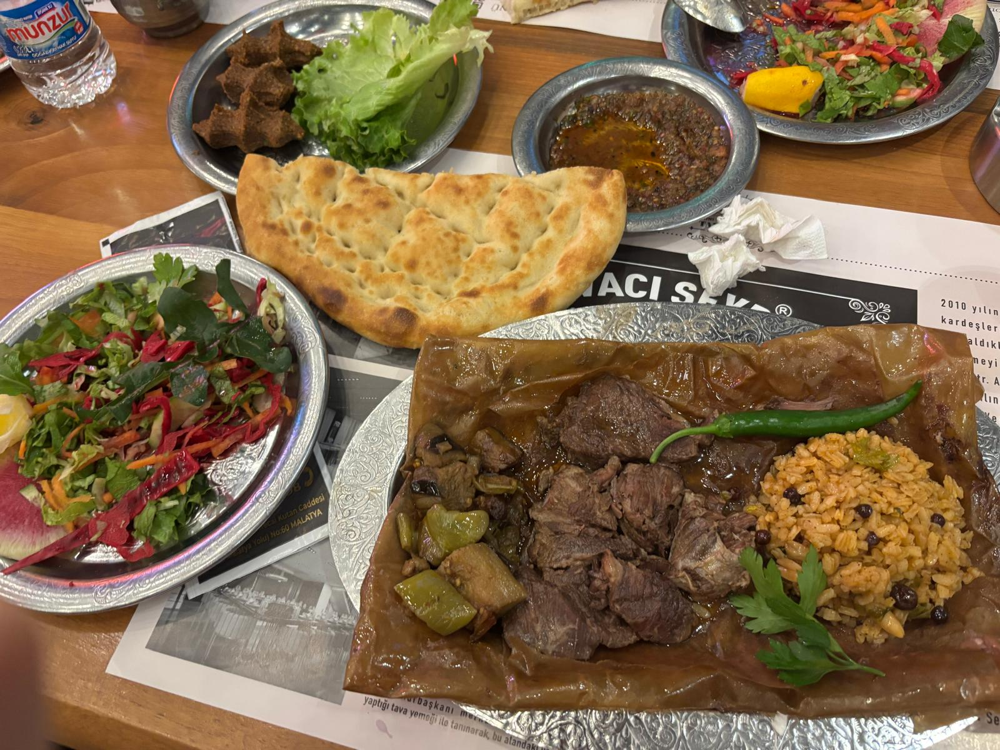
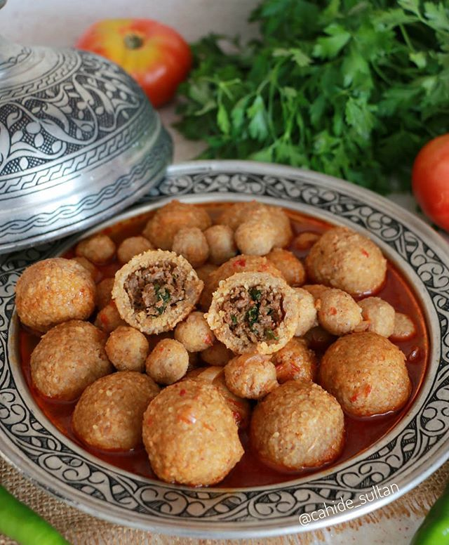
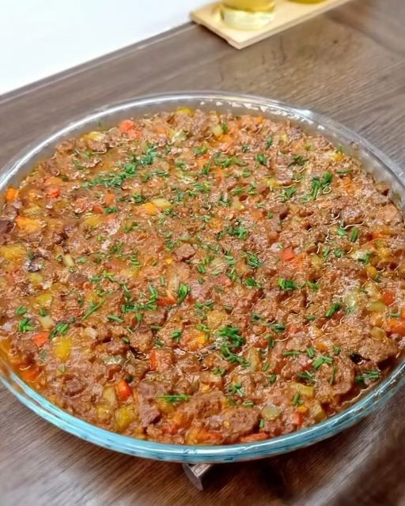

Malatya'nın lezzetli yemekleri, bölgeyi zenginleştiren önemli bir kültürel mirastır. Birçok farklı yemek çeşidiyle tanınır.




Eğer yolunuz Malatya'ya düşerse, çarşı içindeki fırınlarda bu lezzetleri mutlaka denemelisiniz!
Malatya mutfağının tüm detaylı tariflerine buradan ulaşabilirsiniz:
Malatya Yemek Tarifleri TIKLAYINIZ 🍽️